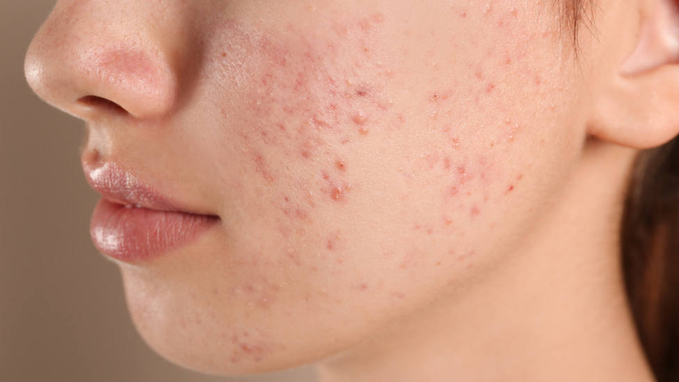
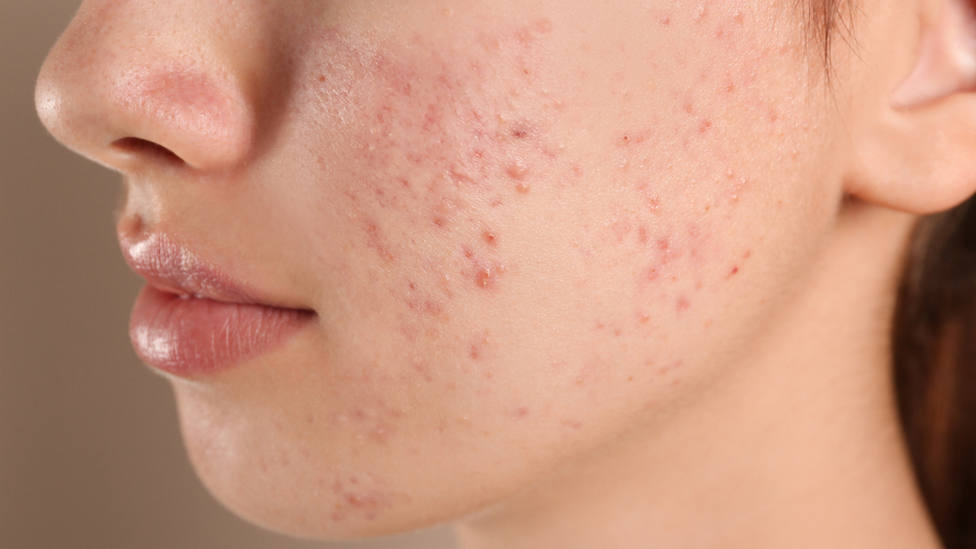

DERMATOLOGÍA INFANTIL
Es la especialidad que se ocupa del cuidado de la piel de lo/as recién nacido/as, niño/as y adolescentes.
¿Qué consultas puedo realizar?
- Prevención: cuidados de la piel, protección del sol, repelentes, control de lunares
- Enfermedades frecuentes: dermatitis atópica, impétigo, dermatitis del pañal, dermatitis seborreica, urticaria, molusco contagioso, verrugas, tiña, sarna, pediculosis, acné, etc.
- Otras: hemangioma, psoriasis, vitiligo, rosácea, alopecias, lupus, genodermatosis.

 
